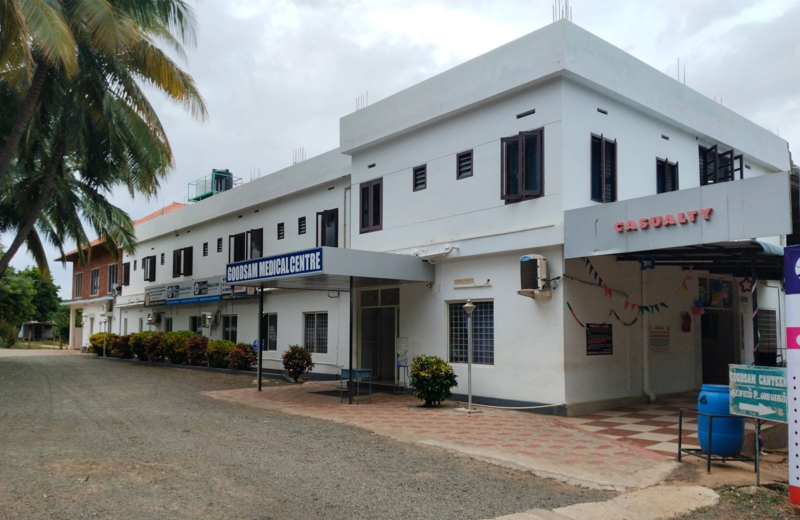

Healthy communities.
Wholesome healing.
Building healthy communities through Christ-centered compassionate care for wholesome healing.
Christ-centered compassionate care for healthy communities. Medical, surgical, ENT and dental care, close to home in Chinnamanur.

Start with a department. Our team can help you with consultation availability and your next visit.
Located on Manalar Dam Road in Chinnamanur, Goodsam Medical Centre brings medical, surgical, ENT and dental care together.
Whether you’re arranging a consultation or helping a loved one plan a visit, get in touch with our team for practical information.
Connect with our hospital ↗︎Inspired by the Good Samaritan.
Committed to healing the whole person.
Building healthy communities through Christ-centered compassionate care for wholesome healing.
Healing the whole person and providing affordable, quality healthcare to everyone in need—regardless of their economic or social status—inspired by the story of the Good Samaritan.
Love God and Love Your Neighbor.
THE SPIRIT OF THE GOOD SAMARITAN
Call or message us to check which department and consultation time suits your visit.
Keep any previous reports, prescriptions and a list of your current medicines ready.
Visit us on Manalar Dam Road, Chinnamanur. Open directions for your route.
Get directions ↗︎Use “Request an appointment” to prepare an enquiry on WhatsApp, or call +91 73737 31757. An appointment is confirmed only after the hospital responds.
The hospital’s existing website lists 24/7 availability. Specialist consultation times may vary; please call before your visit.
Manalar Dam Road, Chinnamanur, Tamil Nadu, India. Use the directions link to plan your route.
For appointments, department enquiries
and information about visiting.